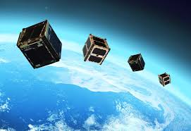

Orbit Education
From Classroom to Cosmos!
Cosmic Curriculum to Explore, Learn, and Build Your Own CubeSat
What's a CubeSat? 🛰️
CubeSats are small, cube-shaped satellites that are perfect for understanding space technology! They are made up of standard units called "U" (1U = 10cm by 10cm by 10cm) and can be stacked to create larger satellites with more capabilities like 2U, 3U, or even 12U sizes! These satellites are lightweight and more cost-effective than traditional satellites, making them ideal for educational projects.
Solar Panels
Convert sunlight into electricity to power the satellite
Convert sunlight into electricity to power the satellite
Antenna
Sends and receives signals to/from Earth
Sends and receives signals to/from Earth
Main Body
Contains computer, battery, and scientific instruments
Contains computer, battery, and scientific instruments

Pleiades Orpheus
- Pleiades Orpheus was launched aboard a SpaceX Falcon 9 rocket on December 21, 2024. Orpheus is a 1U CubeSat built using the open-source PROVES platform from Cal Poly Pomona’s Bronco Space a>. It was developed in collaboration with the Stanford Space Initiative . The mission marks Irvington High School as only the sixth high school globally to successfully place a satellite in space.
-
Mission Objectives :
Earth Imaging: Capture and process images of North America to analyze light pollution patterns using onboard software.
Amateur Radio Outreach: Engage the global ham radio community with LoRa and FSK telemetry downlinks, including monthly competitions for reception and decoding. -
Impact & Vision :
Driven by a commitment to inclusivity and hands-on STEM education, the Pleiades Orpheus team empowers high school students—especially young women—to lead real aerospace missions. The team emphasizes open collaboration, mentorship, and learning-by-doing, with members gaining direct experience in: Satellite systems engineering Mission operations and ground station comms Software and hardware integration -
PROVES (Portable, Reconfigurable, and
Open-Versatile
Educational Satellite) kit
Proves is an open-source CubeSat architecture developed by Bronco Space at Cal Poly Pomona .
Built to democratize access to space, PROVES enables schools, clubs, and student teams to design, build, and fly real satellites without needing million-dollar budgets or professional aerospace labs. -
Start your own Team!
- Form a STEM club at your school or community
center.
- Diversity and collaboration are key. Bring in students interested in coding, electronics, space, writing, and organizing.
- Explore the PROVES Kit. Visit Bronco Space’s GitHub to find open-source schematics, build guides, and mission documentation.
- Reach Out to Mentors.
Connect with university labs like Bronco Space or student orgs like Stanford Space Initiative. Many are excited to support younger students. - Apply
for Launch Opportunities.
Programs like NASA’s CubeSat Launch Initiative (CSLI) or commercial rideshares (like SpaceX Transporter) offer pathways for student satellites to reach orbit. - Engage the Community
Just like Orpheus, include public outreach, ham radio collaboration, and educational goals in your mission plan.